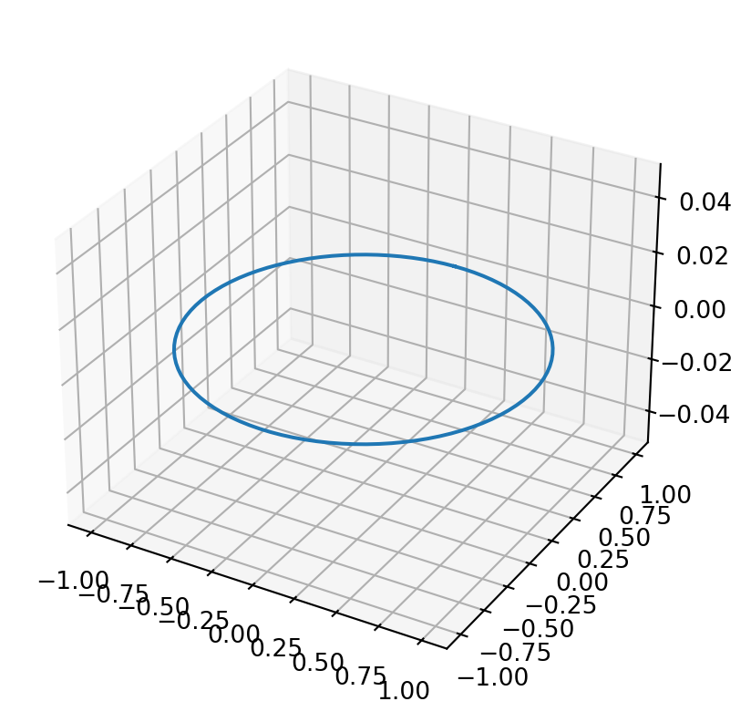
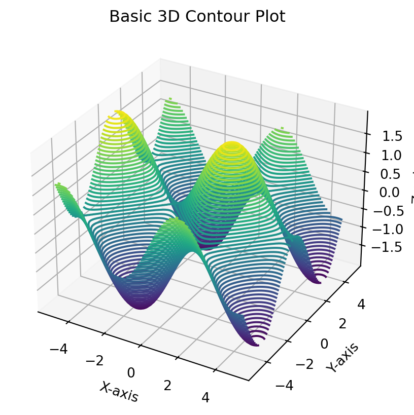

import matplotlib as mplfrom mpl_toolkits.mplot3d import Axes3Dimport numpy as npimport matplotlib.pyplot as plt# mpl.rcParams['legend.fontsize'] = 10fig = plt.figure()ax = fig.add_subplot(projection ='3d')theta = np.linspace(0, 2* np.pi, 100)z =0r =1x = r * np.sin(theta)y = r * np.cos(theta)ax.plot(x, y, z)## We can shift the same plot by choosing different values of z.# z = 3# ax.plot(x, y, z)## for z in np.linspace(0, 1, 100):## ax.plot(x, y, z)plt.show()

But what if we link r and z?
# mpl.rcParams['legend.fontsize'] = 10fig = plt.figure()ax = fig.add_subplot(projection ='3d')theta = np.linspace(0, 2* np.pi, 100)z =0r =1x = r * np.sin(theta)y = r * np.cos(theta)ax.plot(x, y, z)## We can shift the same plot by choosing different values of z.# z = 3# ax.plot(x, y, z)## for z in np.linspace(0, 1, 100):## ax.plot(x, y, z)plt.show()
Region plot (inequalities)
# from itertools import product# def cartesian_product(*arrays):# la = len(arrays)# dtype = np.result_type(*arrays)# arr = np.empty([len(a) for a in arrays] + [la], dtype=dtype)# for i, a in enumerate(np.ix_(*arrays)):# arr[...,i] = a# return arr.reshape(-1, la)# fig = plt.figure()# ax = fig.add_subplot(projection='3d')# xd = np.linspace(0,1,100)# yd = np.linspace(0,1,100)# zd = np.linspace(0,1,100)# products = cartesian_product(xd, yd, zd)# for x, y, z in products:# ax.scatter(x, y, z)# ax.set_xlabel('X Label')# ax.set_ylabel('Y Label')# ax.set_zlabel('Z Label')# plt.show()
Vectors in sympy
from sympy.vector import CoordSys3DN = CoordSys3D('N')
v =2*N.i + N.j #Defines a vector
from sympy.vector import VectorVector.zerotype(Vector.zero)N.i + Vector.zeroVector.zero ==2*Vector.zero
%matplotlib inlineimport matplotlib.pyplot as pltimport numpy as npfrom mpl_toolkits.mplot3d import Axes3D# Creating datax = np.linspace(-5, 5, 100)y = np.linspace(-5, 5, 100)X, Y = np.meshgrid(x, y)Z = np.sin(X) + np.cos(Y)# Creating a 3D plotfig = plt.figure()ax = fig.add_subplot(111, projection='3d')# Plotting the 3D contourax.contour3D(X, Y, Z, 50, cmap='viridis')# Customizing the plotax.set_xlabel('X-axis')ax.set_ylabel('Y-axis')ax.set_zlabel('Z-axis')ax.set_title('Basic 3D Contour Plot')# Displaying the plotplt.show()

from mpl_toolkits.mplot3d import axes3dimport matplotlib.pyplot as pltfrom matplotlib import cmfig = plt.figure()ax = fig.add_subplot(projection ='3d')X, Y, Z = axes3d.get_test_data(0.05)ax.plot_surface(X, Y, Z, rstride=8, cstride=8, alpha=0.3)cset = ax.contour(X, Y, Z, zdir='z', offset=-100, cmap=cm.coolwarm)cset = ax.contour(X, Y, Z, zdir='x', offset=-40, cmap=cm.coolwarm)cset = ax.contour(X, Y, Z, zdir='y', offset=40, cmap=cm.coolwarm)ax.set_xlabel('X')ax.set_xlim(-40, 40)ax.set_ylabel('Y')ax.set_ylim(-40, 40)ax.set_zlabel('Z')ax.set_zlim(-100, 100)plt.show()